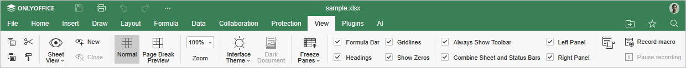
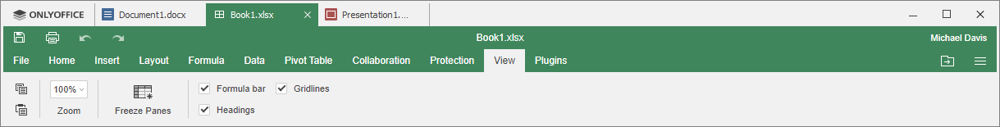

The View tab in the Spreadsheet Editor allows you to manage sheet view presets based on applied filters view options.
The corresponding window of the Online Spreadsheet Editor:

The corresponding window of the Desktop Spreadsheet Editor:

View options available on this tab:
- Sheet View allows managing sheet view presets.
- Normal allows seeing the spreadsheet fully.
- Page Break Preview allows seeing the printed area of the spreadsheet only.
- Zoom allows zooming in and out your spreadsheet.
- Interface Theme allows changing interface theme by choosing a Same as system, Light, Classic Light, Dark, Contrast Dark, Gray, Modern Light or Modern Dark theme.
- Dark Document option becomes active when the Dark, Contrast Dark or Modern Dark theme is enabled. Click it to make the working area dark too.
- Freeze Panes allows freezing and unfreezing certain panes or rows and columns.
The following options allow you to configure the elements to display or to hide. Check the elements to make them visible:
- Formula Bar to show a formula bar above the spreadsheet.
- Headings to show headings, i.e., column headings at the top and row headings on the left.
- Gridlines to show gridlines, i.e., cell outlines.
- Show Zeros to always show "0" when entered in a cell.
- Always Show Toolbar to make the top toolbar always visible.
- Combine Sheet and Status Bars to display all sheet navigation tools and status bar in a single line. The status bar will appear in two lines when this box is unchecked.
- Left Panel to make the left panel visible.
- Right Panel to make the right panel visible.
The Macros button allows you to open the window where you can create and run your own macros. To learn more about macros, please refer to our API Documentation.